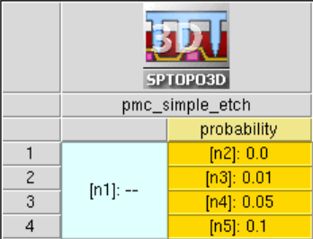

Sentaurus Topography 3D
6. Particle Monte Carlo Examples
6.1 Example: PMC Simple Etching
6.2 Example: PMC Simple Deposition
6.3 Example: PMC Ion-Assisted Etching
6.4 References
Objectives
- To provide examples to help you start using PMC reaction modeling.
6.1 Example: PMC Simple Etching
This example demonstrates a simplified chemical etching case of silicon by fluorine. The example uses four reactions to model the oxidation reactions of silicon and SiFx by fluorine that eventually yield the SiF4 molecule that is volatile and leaves the surface, resulting in the etching of silicon.
In PMC, the surface coverage by different materials plays a major role on the effect of the reactions in the model. Here, for example, the amount of etching achieved at the end depends on the surface coverage by the SiF3 species, which also depends on the probabilities of the adsorption reactions named SiF, SiF2, and SiF3.
The model can be defined as follows:
define_model name=F_etch_Si description="Silicon chemical etch by Fluorine" add_source_species model=F_etch_Si name=F add_reaction model=F_etch_Si name=SiF expression="F<g> + Silicon<s> = SiF<s>" add_reaction model=F_etch_Si name=SiF2 expression="F<g> + SiF<s> = SiF2<s>" add_reaction model=F_etch_Si name=SiF3 expression="F<g> + SiF2<s> = SiF3<s>" add_reaction model=F_etch_Si name=etch_SiF3 expression="F<g> + SiF3<s> =SiF4<v>" finalize_model model=F_etch_Si
6.1.1 Defining the Etching Species and Machine
The next steps define the distribution for the gas species F and also define a machine:
define_species_distribution name=F_distribution exponent=1 species=F flux=3.0e-3 define_etch_machine model=F_etch_Si species_distribution=F_distribution
Note that no name is given to the machine as this will be the only machine defined in this project. A default name is given tacitly to this machine. Nevertheless, it is a good practice to use a unique machine name every time you define a new machine.
6.1.2 Defining the Simple Etch Reaction Properties
Fluorine has an isotropic character (exponent=1) and a flux of 0.003 mol s-1 m-2. As you have already defined the machine, the next step is to define the reaction probabilities. If you use Sentaurus Workbench for experiment design, then you can easily parameterize all the parameters of the PMC process. For example, the probability of the etch reaction SiF3 could be parameterized using the Sentaurus Workbench parameter @probability@ as follows:
add_reaction_properties reaction=SiF p=0.7 add_reaction_properties reaction=SiF2 p=0.05 add_reaction_properties reaction=SiF3 p=0.05 add_reaction_properties reaction=etch_SiF3 p=@probability@

Figure 1. Sentaurus Workbench project of the PMC silicon etching process by fluorine. The parameter @probability@ is used to define the probability of the reaction etch_SiF3.
6.1.3 Running the PMC Simple Etching Simulation
After defining all the reaction properties of your PMC etching model, you can run the simulation with the etch command. You can speed up the PMC engine by using multithreading, and its performance scales almost linearly with the number of threads used:
let parallel=true let num_threads=20 etch spacing=0.001 time=1.0 method=pmc save type=dc dc_version=2 file=n@node@_prob_@probability@_t3d.tdr
The etch command is used without a machine name as there is only one machine defined in the project. In Figure 2, you can observe the effect of the probability for the reaction etch_SiF3. Increasing its probability means more silicon is etched. Note the lateral etching of silicon as the fluorine particles have an isotropic angular distribution when they are emitted from the source (exponent=1). The masking material (Photoresist) has no reactions defined in the PMC model and it remains intact. Of course, you could add reactions for this material as well.
{kind=link}
Figure 2. Increasing the etching rate with the probability of the reaction etch_SiF3. Note the lateral etching (mask undercut) due to the isotropic nature of the source species and due to their isotropic reemission from the surface (default event) in case they do not react. (Click image for full-size view.)
The complete project can be investigated from within Sentaurus Workbench in the directory Applications_Library/GettingStarted/sptopo3d/PMC_Simple_Etch.
6.2 Example: PMC Simple Deposition
This section presents a simple example of deposition of a polymer on silicon. Taking advantage of the reflective boundary conditions (BCs) that are used by default in PMC, you can create only 1/4 of the real structure. This saves simulation time and resources, and it is strongly advised for problems with symmetry.
6.2.1 Running the PMC Simple Etching Simulation
The initial structure (see Figure 3) contains only one material (silicon), so you only need two reactions for deposition, one "nucleation" reaction and one "growth" reaction as follows:
define_model name=m description="simple deposition model" add_source_species model=m name=P add_reaction model=m name=nucleation_Si \ expression="P<g> + Silicon<s> = Polymer<s> + Silicon<b>" add_reaction model=m name=growth_Polymer \ expression="P<g> + Polymer<s> = Polymer<s> + Polymer<b>" finalize_model model=m
{kind=link}
Figure 3. (Left) Initial silicon structure before polymer deposition that will be simulated with 1/4 symmetry and (right) the entire structure that corresponds to the applied reflective BCs of the 1/4 structure. (Click image for full-size view.)
6.2.2 Defining the Deposition Species and Machine
The second step is the definition of the distribution for the source species P and the definition of the machine. Again, note that although the PMC model contains only deposition reactions, an etch machine has been defined as this is the convention in PMC. Here are the commands for this step:
define_species_distribution name=P_distribution exponent=1 species=P flux=1e-3 define_etch_machine name=depo_machine model=m \ species_distribution=P_distribution
6.2.3 Defining the Simple Deposition Reaction Properties
The reaction probabilities for the deposition model can be simply set using the Sentaurus Workbench parameter @sticking@. As for a real process (LPCVD for example), when the sticking probability is small, the deposited layer is more conformal because the reemission rate of the precursor species (P here) is higher. On the other hand, for small sticking coefficients, the deposition time needs to increase to achieve the required deposition thickness.
add_reaction_properties machine=depo_machine reaction=nucleation_Si p=@sticking@ add_reaction_properties machine=depo_machine reaction=growth_Polymer \ p=@sticking@
6.2.4 Running the PMC Simple Deposition Simulation
To run the PMC simulation, you use the etch command with an additional parameter, top_gas_thickness, that adds a gas layer to the top of the structure. The thickness of the added gas layer is equal to the value defined by top_gas_thickness (in μm) measured from the topmost point of the boundary structure.
During deposition processes, material is added to the top of an existing structure, and the simulator must have enough empty gas cells above the exposed surface to add this material. Otherwise, the simulation stops if not enough gas is found at the top.
Here, 1 μm of gas is added to the top to ensure that no error occurs. A rough estimation of the necessary gas thickness can be made by calculating the deposition rate on a flat surface by taking into account the sticking coefficient, the flux of the precursor, and the density of the material.
In PMC, the density ρ for all materials is set to be 50 atoms per nm3, so for a sticking coefficient \(σ = 1.0\) and a flux of \(Γ = 0.001\: \text"mol"\html" " \text"s"^{-1}\html" " \text"m"^{-2} \), the deposition rate on a flat unobstructed surface would be:
\[R_{\text"depo"} = {σ Γ} / { ρ} ≅ 722 \html" " [\text"nm" \html" " \text"min"^{-1}] \]
So, after estimating roughly the thickness of the gas that needs to be added (~1 μm), you can write the etch command as follows:
etch machine=depo_machine spacing=0.005 time=1.0 method=pmc \ top_gas_thickness=1.0 save type=dc dc_version=2
Figure 4 shows the resulting structures for four different values of the @sticking@ parameter. The structure has a 1/4 symmetry as the BCs are set by default to reflected, so there is a trench in the middle with a square cross-section.
You can clearly observe the geometric effect on the flux of species inside and outside the trench that occurs automatically with the PMC method (as well as with the level-set method). There is less material deposited inside the trench than outside and, for high sticking probabilities, a void is eventually formed in the trench due to the high differential deposition rate.
{kind=link}
Figure 4. Three-dimensional images of the structure after 1 minute deposition for various sticking probabilities. For small sticking coefficients, the deposited thickness is smaller but the filling of the trench in the middle of the structure is more conformal. For high sticking values, you can clearly see the formation of the void in the trench. Remember that the boundary conditions on the simulation domain sidewalls are set to "reflected" by default, so here you are dealing with a structure with 1/4 symmetry. (Click image for full-size view.)
The complete project can be investigated from within Sentaurus Workbench in the directory Applications_Library/GettingStarted/sptopo3d/PMC_Simple_Deposition.
6.3 Example: PMC Ion-Assisted Etching
This section presents a PMC model of an ion-assisted etching process of silicon with the XeF2 molecule and Ar+ ions. The example is inspired by one of the most classical publications on the subject [Ref. 1] that brought to light the synergy between ion bombardment and chemical etching of a material in a process that is also known as reactive ion etching.
You need to introduce two species for this model: XeF2 and Ar+ for the corresponding species XeF2 and Ar+. On the one hand, the XeF2 molecule carries the highly reactive atoms of fluorine (F) that can be adsorbed on silicon and forms SiFx. At room temperature, the etching process of Si only with XeF2 is quite slow as there is a significant activation energy in order to produce the volatile SiF4 species from SiFx.
On the other hand, using only Ar+ plasma for etching of silicon requires high-energy particles (for physical sputtering). In most cases, these energetic particles (ions) erode the masks, and the selectivity with respect to other materials is reduced to almost 1:1. At low ion energies, the etching rate of silicon by sputtering is very slow.
In the early investigations into plasma etching in the 1970s, it was observed that you could multiply the etching rate of silicon by more than an order of magnitude by combining a molecule of XeF2 with relatively low-energy Ar+ ions. This synergy of species was demonstrated in the publication of Coburn and Winters [Ref. 1]. There, first XeF2 was introduced in the reactor during the first 200 s of the process and then Ar+ was activated with an energy of ~450 eV. After a total time of ~660 s, the XeF2 flow stopped, leaving only the Ar+ ions to interact with polysilicon. When both XeFs and Ar+ are present in the reactor, argon ions provide the necessary energy to remove SiFx from the surface, thereby greatly increasing the etching rate of silicon.
See Figure 2 in [Ref. 1], which shows the original experiment demonstrating the synergy between A+ and XeF2 for silicon etching.
6.3.1 PMC Time-Dependent Species Distributions
To replicate the switching of species flows in PMC, it is possible to render the parameters in the define_species_distribution command time-dependent. In this case, the fluxes of Ar+ and XeF2 need to become dependent on time. For example:
define_species_distribution name=my_distr species=Ar+ exponent=2.0e3 \ flux="square_pulse(t<s>, 0.0, @flux_Ar+@, 1000.0, 0.2)" \ sampling_time_step=0.01 define_species_distribution name=my_distr species=XeF2 exponent=1.0 \ flux="square_pulse(t<s>, @flux_XeF2@, 0.0, 1000.0, 0.7)" \ sampling_time_step=0.01 save species_distribution=my_distr output_type=parameters \ file=n@node@_distribution.tdr time=1000<s>
A square pulse is used for the two species. The arguments of the square_pulse function are (from left to right) the function of time f(t), the value of the pulse when it is switched on, the value of the pulse when it is switched off, the pulse period, and the duty cycle. Here, the function of time is linear, directly proportional to t.
The convention is that the time during which the pulse is switched on is the product of the duty cycle and the period. For Ar+ during the first 200 s (1000 x 0.2), the value is set to 0.0 (no argon ions), and then it is switched on. The XeF2 species are switched on when t=700 s. For both species, the period is set to 1000 s.
As you can observe, the parameters of the distributions (in this case, the flux) can be saved in a TDR file and then visualized with Sentaurus Visual as shown in Figure 5.
{kind=link}
Figure 5. Time-dependent fluxes of species XeF2 and Ar+. (Click image for full-size view.)
6.3.2 PMC Ion-Assisted Etching Model
Now, you concentrate on the surface reactions that will reproduce the effect of ion-assisted etching. You can find the full PMC model here:
define_model name=rie_pmc description="pmc ion-assisted etch of Silicon" add_source_species model=rie_pmc name=Ar+ add_source_species model=rie_pmc name=XeF2 add_reaction model=rie_pmc name=sput_Si \ expression="Ar+<g> + Silicon<s> = Silicon<q>" add_reaction model=rie_pmc name=refl_Si \ expression="Ar+<g> + Silicon<s> = Silicon<s> + Ar+<r>" add_reaction model=rie_pmc name=sput_SiFx \ expression="Ar+<g> + SiFx<s> = SiFx<q>" add_reaction model=rie_pmc name=refl_SiFx \ expression="Ar+<g> + SiFx<s> = SiFx<s> + Ar+<r>" add_reaction model=rie_pmc name=sput_PR \ expression="Ar+<g> + Photoresist<s> = Photoresist<q>" add_reaction model=rie_pmc name=refl_PR \ expression="Ar+<g> + Photoresist<s> = Photoresist<s> + Ar+<r>" add_reaction model=rie_pmc name=adsorb_F_Si \ expression="XeF2<g> + Silicon<s> = SiFx<s>" add_reaction model=rie_pmc name=etch_F_Si \ expression="XeF2<g> + SiFx<s> = SiF4<v>" finalize_model model=rie_pmc
The model describes the adsorption of F on Silicon to form SiFx, and the contributions to etching by further fluorination of SiFx to create the volatile species SiF4 (slow) as well as the physical sputtering of silicon (slow) and the sputtering of SiFx (fast) by argon ions Ar+.
There are reactions for sputtering of the mask material (Photoresist) and reflection reactions on Silicon, Photoresist, and SiFx.
It is important to note that, in this model, the task of removing SiFx from the surface is attributed to the sputtering reaction with Ar+. This is a simplification of the "real" mechanism where in fact Ar+ gives, by ion bombardment, the necessary energy in order for XeF2 to further fluorinate SiFx and render it volatile (etching).
6.3.3 Defining the Ion-Assisted Etching Species and Machine
After the model definition, you must add the species distributions (already discussed in Section 6.3.1 PMC Time-Dependent Species Distributions) as well as the mandatory yield functions for the sputtering reactions. The Ar+ species are anisotropic (high exponent), so you need to discard them if they do not react. Finally, you need to define the etching machine for the PMC model, so your configuration should look like the following:
define_species_distribution name=my_distr species=Ar+ exponent=2.0e3 \ flux="square_pulse(t<s>, 0.0, @flux_Ar+@, 1000.0, 0.2)" \ sampling_time_step=0.01 define_species_distribution name=my_distr species=XeF2 exponent=1.0 \ flux="square_pulse(t<s>, @flux_XeF2@, 0.0, 1000.0, 0.7)" \ sampling_time_step=0.01 save species_distribution=my_distr output_type=parameters \ file=n@node@_distribution.tdr time=1000<s> define_yield name=my_yield energy=0 species=Ar+ material=Silicon \ yield_at_zero=1.2 yield_max=2.4 theta_max=60 define_yield name=my_yield energy=0 species=Ar+ material=SiFx \ yield_at_zero=1.0 yield_max=1.05 theta_max=50 define_yield name=my_yield energy=0 species=Ar+ material=Photoresist \ yield_at_zero=1.0 yield_max=1.5 theta_max=50 save yield=my_yield file=n@node@_yield.tdr define_species_properties name=my_props species=Ar+ default_event=discard define_etch_machine name=rie_machine model=rie_pmc \ species_distribution=my_distr yield=my_yield species_properties=my_props
{kind=link}
Figure 6. Plots of the yield of species Ar+ for the sputtering reactions with Silicon, Photoresist, and SiFx. (Click image for full-size view.)
6.3.4 PMC Ion-Assisted Etching Reaction Properties
Now that you have defined the machine and the properties of the source species, it is time to add the properties of the surface reactions of your model. The direct physical sputtering of Silicon and Photoresist by Ar+ has a low probability for the low ion energy assumed here. A relatively slow reaction is the further fluorination of SiFx, so you can put a very low probability there as well.
On the other hand, the sputtering reaction of SiFx by Ar+ has the maximum probability (this can be adjusted to fit experimental observations), and the adsorption reaction of fluorine on silicon has also a high probability with a typical value of 0.7. The reflection probability is adjusted using the Mizuno formula (refer to the Sentaurus™ Topography 3D User Guide) with the parameter mizuno_k. Here are the properties of the surface reactions:
define_probability name=refl_prob mizuno_k=0.01 energy=0 add_reaction_properties machine=rie_machine reaction=sput_Si p=0.001 add_reaction_properties machine=rie_machine reaction=refl_Si \ probability=refl_prob add_reaction_properties machine=rie_machine reaction=sput_SiFx p=1.0 add_reaction_properties machine=rie_machine reaction=refl_SiFx \ probability=refl_prob add_reaction_properties machine=rie_machine reaction=sput_PR p=0.001 add_reaction_properties machine=rie_machine reaction=refl_PR \ probability=refl_prob add_reaction_properties machine=rie_machine reaction=adsorb_F_Si p=0.7 add_reaction_properties machine=rie_machine reaction=etch_F_Si p=1.0e-5
6.3.5 Running the PMC Ion-Assisted Etching Simulation
Your PMC setup for ion-assisted etching is ready to be simulated. The Sentaurus Workbench project, which is available in the GettingStarted directory of the Applications_Library, has an option to simulate two structures: one without any mask (@PR_mask@=OFF) to monitor the silicon etching rate on a flat unobstructed surface and one with a Photoresist to test the model in a more realistic case.
{kind=link}
Figure 7. Sentaurus Workbench project used for the ion-assisted etching example. The parameters @flux_Ar+@ and @flux_XeF2@ are introduced to set the maximum fluxes of Ar+ and XeF2, respectively. The parameter @PR_mask@ is used to select between two structures to be simulated, one with a Photoresist mask (@PR_mask@=ON) and one without. (Click image for full-size view.)
As you can see in the following code block, the define_extraction command is used to extract the silicon thickness in the middle of the flat surface. This extraction can then be called by the etch command, and it will be executed with a certain interval (extraction_interval=10.0<s>). The results will be saved in a separate TDR file, to observe etching evolution during runtime or as a postprocessing task.
define_extraction name=my_extraction type=probe property=length \
materials= {Silicon} axis=z point= {-0.025 -0.025 0.0} \
file=n@node@_Si_Thickness.tdr
etch machine=rie_machine spacing=0.002 time=1000.0<s> method=pmc \
extraction=my_extraction extraction_interval=10.0<s>
In Figure 8, you can observe the silicon etching rate as calculated from the thickness of silicon extracted during the etching process by using the defined extraction. The synergy between the two source species comes into play when both fluxes of XeF2 and Ar+ are switched on, so that the etching rate increases by more than an order of magnitude.
{kind=link}
Figure 8. Silicon etching rate (flat surface) on the right. You can observe the "jump" of the etching rate when both XeF2 and Ar+ are switched on (reference on the left). The etching rate when only XeF2 or Ar+ is used is about one order of magnitude lower, a similar behavior as in Figure 2 in [Ref. 1]. (Click image for full-size view.)
When the second structure is used with the Photoresist mask, you can observe the anisotropic etching profile in silicon. In Figure 9, you can also observe the effect of the reflection of the Ar+ species on Photoresist, Silicon, and SiFx. When the reflection is deactivated (mizuno_k=0), the etching depth is less than with the reflection of Ar+ particles, and the shape of the hole differs slightly.
{kind=link}
Figure 9. Anisotropic etching of silicon using the ion-assisted etching PMC model with a Photoresist mask. The amount of reflection is adjusted with the mizuno_k parameter for the probabilities of the reflection reactions. You can observe the microtrenching effect at the bottom of the hole in silicon due to the reflection (mizuno_k=0.01, right) of Ar+ particles on the sidewalls. It is often necessary to use finer spacing (here 2 nm) to observe effects like microtrenching, especially for small feature sizes. (Click image for full-size view.)
The complete project can be investigated from within Sentaurus Workbench in the directory Applications_Library/GettingStarted/sptopo3d/PMC_Ion_Assisted_Etch.
6.4 References
- Ref. 1
- J. W. Coburn and H. F. Winters, "Ion- and electron-assisted gas-surface chemistry—An important effect in plasma etching," Journal of Applied Physics, vol. 50, no. 5, pp. 3189–3196, 1979 (https://aip.scitation.org/doi/10.1063/1.326355).
Copyright © 2022 Synopsys, Inc. All rights reserved.